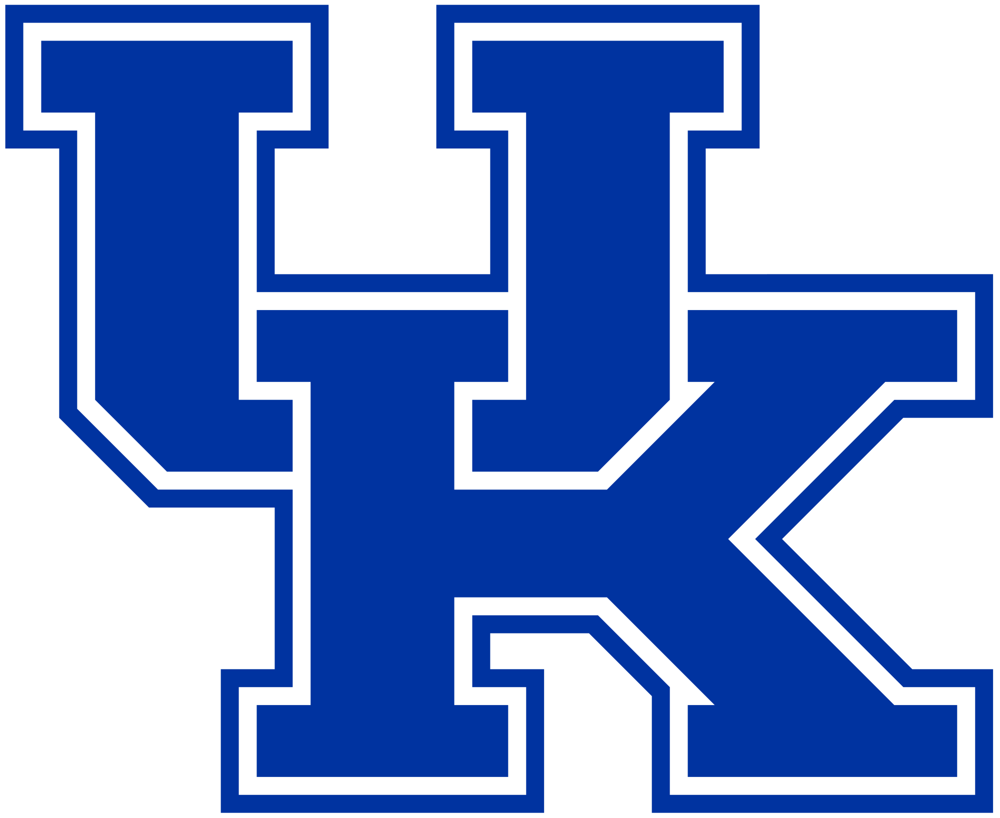

About Me
I'm just getting started on this coding journey, but I've always had a passion for technology of all types. Keep an eye on this space for new developments, including new projects that demonstrate what I've learned and what I can offer to you as a client.
Being a former teacher, I'm accustomed to working with teams - teams of educators, teams of faculty members, and teams of students. I'm anxious to work with a new type of group - a group of like-minded and avid developers working toward common goals.
Outside of my coding education, I am passionate fan of:
- University of Kentucky sports (but mainly basketball). Click the image above to visit my favorite UK sports website.
- Rock climbing
- Reading
- Catching up on the latest must-see TV shows and series
- Listening to true crime podcasts
Post-graduation, my goal is to provide freelance web design and development services.
Project Section
- Title of the Project
- Description that explains that I understand the project's purpose, your approach to building the project and who it's for, and what you learned from building it.
- Skills used (what is the stack)